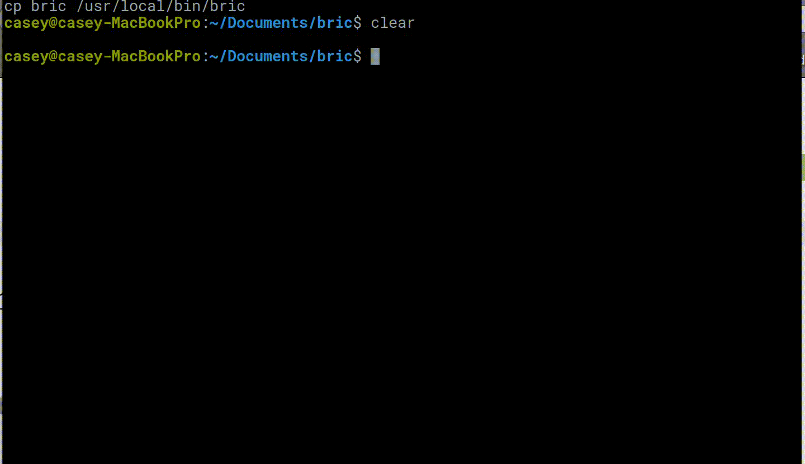

25/07/17
Big O Notation And Algorithmic Complexity
I’ve decided to write a quick tutorial on how it all works. So hopefully it may come in handy as a quick learning tool or reminder for myself, or even another person who comes across this post at a later date.
View the full blog post here...
24/07/17
Coding Interview University
I've started on my journey to self teaching as much computer science knowledge that I can!
View the full blog post here...
16/05/17
RustNightlyNotifier
I was on Twitter the other day (@casey__williams) when I came across a retweet by @rustlang of a tweet asking if someone could build a Twitter bot that posted when a new nightly build was released.
I had thought of making a Twitter bot before but never had a reason to, until now...
View the full blog post here...
20/04/17
Eater8
The other day I was browsing on reddit (as you do) and came across a post on r/compsci
that was asking what are people's out of work hobbies. Someone commented that they were following Ben Eater's videos on building an 8-bit breadboard computer.
View the full blog post here...
16/04/17
I watched The Social Network
So the other night I was looking up for some nice interesting tech films that I could spend a couple hours of downtime on.
I came across The Social Network - its about Mark Zuckerberg and the rising of Facebook.
View the full blog post here...
13/04/17
My first software meetup
So this evening I attended my first software developers meetup in my local town - Taunton.
The talk was titled 'An Introduction to Xamarin Forms' and was presented by Martin Rock-Evans a lead software developer at UKHO.
View the full blog post here...
10/04/17
bric - text editor

This past week I've spent taking a small text editor made by antirez, adapting it and adding new features.
View the full blog post here...
02/05/16
Chip-Emul8
This was my first little emulator of a Chip 8 virtual machine from the 80s. It runs old school games like Pong, Breakout and Tetris.
View the full blog post here...